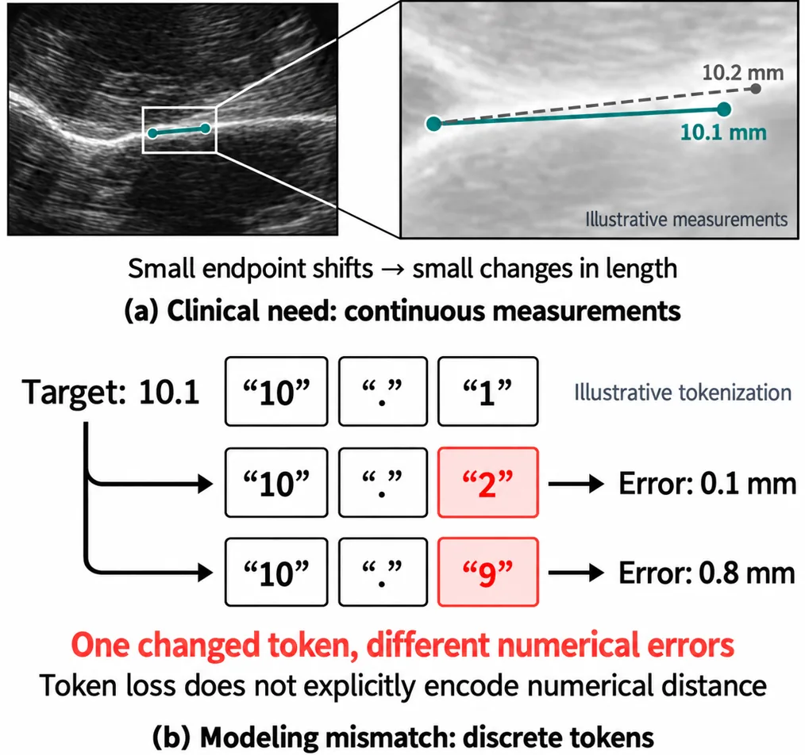
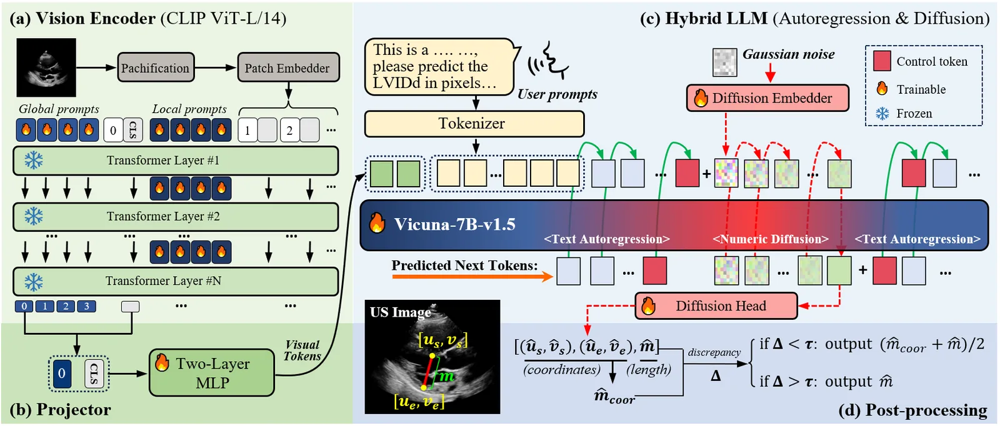
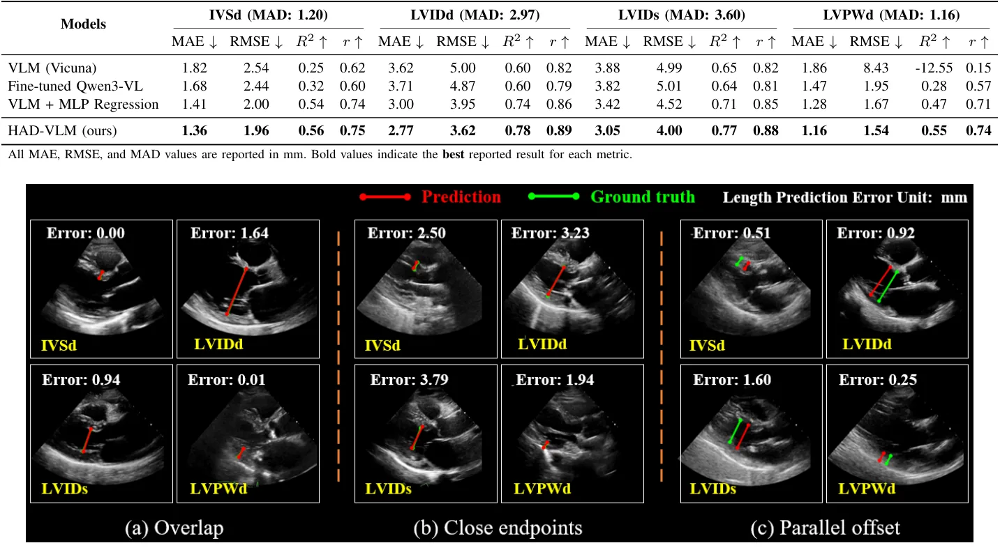

O problema da discretização em medidas médicas
Em diagnósticos clínicos, a interpretação de imagens quantitativas é fundamental. Dimensões anatômicas, diâmetros de lesões e volumes ventriculares fornecem dados objetivos para caracterizar doenças e acompanhar pacientes ao longo do tempo. No ultrassom (US), obter essas medidas exige identificar marcos anatômicos e posicionar manualmente calibradores ou traçar limites. Esse processo aumenta a carga de trabalho e está sujeito a variabilidade entre observadores.
Modelos de visão e linguagem (VLMs) surgem como uma alternativa promissora, permitindo que tarefas sejam especificadas por instruções em linguagem natural. No entanto, existe um conflito fundamental: as variáveis clínicas são contínuas, enquanto os VLMs autoregressivos geram valores como sequências de tokens discretos. Essa discrepância é o foco central deste estudo.
Quando um modelo gera '10.1' como tokens '10', '.' e '1', ele não preserva a proximidade numérica. Erros em nível de token não refletem a distância real entre os valores. Para medidas baseadas em calibradores, pequenas imprecisões na geração de tokens podem levar a erros clínicos significativos. O paper busca resolver essa lacuna entre a flexibilidade da linguagem e a precisão da regressão contínua.

Introdução ao HAD-VLM
Os autores propõem o HAD-VLM, um framework híbrido que combina geração de texto autoregressiva com previsão de medidas contínuas em um backbone compartilhado. A ideia é unificar a interação por linguagem com a previsão numérica baseada em anatomia. O modelo não substitui apenas a regressão, mas integra-a ao fluxo de geração de linguagem.
O HAD-VLM utiliza um encoder visual adaptado para imagens de ultrassom e um LLM (Vicuna-7B-v1.5) como núcleo. A inovação principal reside na cabeça de previsão numérica, que emprega um processo de difusão para prever diretamente variáveis contínuas, evitando a decomposição em tokens.
Essa abordagem permite que o modelo mantenha a capacidade de responder perguntas médicas em linguagem natural, enquanto fornece estimativas quantitativas precisas. O framework é projetado para ser flexível, permitindo que clínicos especifiquem medidas desejadas via prompt, aproveitando representações visuais e semânticas compartilhadas.

Detalhamento da arquitetura
A arquitetura do HAD-VLM consiste em quatro componentes principais. Primeiro, um encoder visual baseado em CLIP ViT-L/14, adaptado para ultrassom via Visual Prompt Tuning (VPT). Prompts aprendíveis são inseridos nas camadas do Transformer para ajustar as representações visuais sem congelar o backbone pré-treinado.
Segundo, um projetor MLP alinha as representações visuais ao espaço de embeddings do LLM. Terceiro, o LLM é augmentado com um embedder de difusão e uma cabeça de difusão dedicada à regressão numérica. Cada medida é representada como um quíntuplo contínuo: coordenadas normalizadas de início e fim, e o comprimento correspondente em pixels.
O processo de difusão prevê esse quíntuplo diretamente no espaço contínuo. Um embedder mapeia o tuplo ruidoso e o timestep para o espaço de embeddings do LLM. Isso permite que a previsão numérica seja integrada ao contexto gerado pelo modelo de linguagem, preservando a coerência semântica entre texto e números.
Treinamento e inferência
O treinamento ocorre em três etapas: alinhamento, regressão e treinamento conjunto. No alinhamento, o modelo ajusta o encoder visual e o projetor. Na regressão, a cabeça de difusão é otimizada para prever as medidas. No treinamento conjunto, todos os parâmetros são ajustados simultaneamente, com LoRA aplicado nas últimas quatro camadas do LLM.
Durante a inferência, o modelo gera texto autoregressivamente. Quando detecta um delimitador de medida, ele inicia o processo de amostragem de difusão. Para refinar as estimativas, os autores propõem um mecanismo de consistência entre coordenadas e comprimento, além de previsão em ensemble. Isso ajuda a garantir que as medidas geradas sejam geometricamente plausíveis.
O esquema de ruído utiliza v-prediction com 100 timesteps e um schedule de ruído squared-cos cap v2. A amostragem DDIM é usada para gerar as previsões finais. O pós-processamento agrega as previsões do ensemble e seleciona a melhor estimativa com base na consistência geométrica.
Avaliação experimental
O modelo foi avaliado no dataset EchoNet-LVH, contendo vídeos de ultrassom cardíaco. Focam-se em quatro medidas clínicas relevantes: espessura da septo interventricular em diástole (IVSd), dimensão interna do ventrículo esquerdo em diástole (LVIDd), dimensão interna do ventrículo esquerdo em sístole (LVIDs) e espessura da parede posterior do ventrículo esquerdo em diástole (LVPWd).
Os dados foram convertidos em pares de texto-medida, com prompts de QA diversificados gerados por ChatGPT. Isso permite que o modelo aprenda a associar instruções em linguagem natural às medidas quantitativas correspondentes. O dataset foi dividido em treino, validação e teste em uma proporção de 87:3:10.
O treinamento foi realizado em uma única GPU NVIDIA A100, com batch size de 8 e otimização AdamW. O learning rate foi ajustado em cada fase do treinamento, variando de 1x10^-4 a 1x10^-6. A validação cruzada e a análise de ablação foram usadas para verificar a contribuição de cada componente do modelo.

Resultados quantitativos
Os resultados mostram que o HAD-VLM alcança erros absolutos médios (MAE) de 1.36, 2.77, 3.05 e 1.16 mm para IVSd, LVIDd, LVIDs e LVPWd, respectivamente. Isso representa uma redução de 21.4% a 37.6% no erro em comparação com a base autoregressiva Vicuna.
Além disso, o HAD-VLM superou o Qwen3-VL fine-tuned e a regressão direta via MLP em todas as tarefas. A análise de ablação confirmou que o ajuste do encoder visual para ultrassom e o pós-processamento contribuem significativamente para a melhoria da precisão.
O modelo também preservou o desempenho em perguntas de medicina, indicando que a integração da difusão não prejudica a capacidade de compreensão linguística. Em uma avaliação adicional em raios-X para medição de vértebras, o MAE caiu de 11.4 para 6.7 pixels, sugerindo aplicabilidade além do ultrassom.
Limitações e futuro
Uma limitação atual é que o framework foca em medidas lineares. Embora amplamente aplicáveis, como estimativa de tamanho de tumores e diâmetro de vasos, a extensão para medidas geométricas complexas ou baseadas em área é um trabalho futuro. A generalização para outras modalidades de imagem, como CT e MRI, também deve ser investigada.
Outra direção é incorporar supervisão de relatórios de maior qualidade, seguindo um fluxo 'qualitativo-para-quantitativo'. Descrever estruturas anatômicas antes de fornecer medidas numéricas pode fornecer priores anatômicos úteis, melhorando a precisão e confiabilidade.
Os autores também mencionam a necessidade de validação em múltiplas instituições e condições de imagem. A estimativa de incerteza nas previsões e a integração em fluxos de trabalho clínicos de geração de relatórios completos são próximos passos para tornar o HAD-VLM uma ferramenta clínica robusta.
O que fica
- Modelos de linguagem tradicionais falham em medidas médicas contínuas por usarem tokens discretos.
- HAD-VLM usa difusão para prever coordenadas e comprimentos diretamente no espaço contínuo.
- Redução de até 37,6% no erro absoluto médio comparado a bases autoregressivas.
- Mantém capacidade de QA médica enquanto melhora regressão quantitativa.
Paper original: Beyond Discrete Tokens: Preserving Numerical Continuity in Medical Vision-Language Models
Comentários
Nenhum comentário ainda. Seja o primeiro.